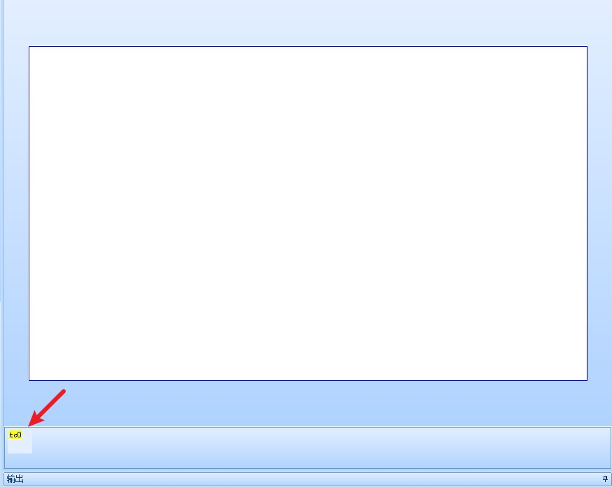
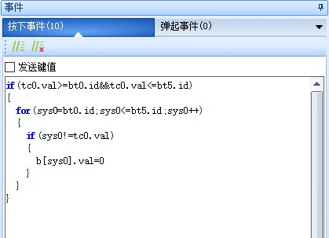

触摸捕捉控件
提示
视频教程： 触摸捕捉控件
触摸捕捉控件可以获取到被点击控件的id。
click指令触发控件时，不会导致触摸捕捉控件被触发，只有用手去点击屏幕时才会被捕捉。
每个页面虽然能创建多个触摸捕捉控件，但只有1个会生效（id值最高且有事件代码的触摸捕捉控件会生效），因此请勿在同一个页面创建多个触摸捕捉控件。
触摸捕捉控件位于特殊控件栏上。

触摸捕捉控件-使用详解
触摸捕捉控件触发顺序
当一个控件被触发时，触发的顺序如下
按下时：
触摸捕捉按下事件被触发 -> 控件的按下事件被触发
弹起时：
触摸捕捉弹起事件被触发 -> 控件的弹起事件被触发
因此，如果要在触摸捕捉控件中判断控件状态，例如判断双态按钮的状态，请写在控件的弹起事件中
触摸捕捉控件实现双态按钮之间的互斥（双态按钮bt0-bt5的id号是连续的）
if(tc0.val>=bt0.id&&tc0.val<=bt5.id)
{
for(sys0=bt0.id;sys0<=bt5.id;sys0++)
{
if(sys0!=tc0.val)
{
b[sys0].val=0
}
}
}

注意
如果出现报错信息，请检查双态按钮的id号是否连续
触摸捕捉控件实现屏保功能
需要搭配定时器控件和数字控件实现实现
新建一个触摸捕捉控件tc0和数字控件n0，定时器控件tm0，tm0的en设置为1，tim设置为1000
因为点击任何控件都会触发触摸捕捉控件，在触摸捕捉控件编写以下代码
n0.val=0 //任何触摸操作都会触发n0被清零
在定时器中编写以下代码
n0.val++
if(n0.val>60)
{
//超过60秒，跳转到屏保页面
page screenSaver
}
触摸捕捉控件实现蜂鸣器播放
需要支持蜂鸣器的屏幕,如果是支持喇叭的屏幕,可以用play指令来代替
点击任意位置都让蜂鸣器鸣叫
因为点击任何控件都会触发触摸捕捉控件，在触摸捕捉控件编写以下代码,此时点击屏幕上的任意位置蜂鸣器都会响
beep 50
点击有控件的位置让蜂鸣器鸣叫,点击空白位置不鸣叫
点击空白位置时是触发了页面控件,其id固定为0,因此只要id是大于0的,就是存在其他控件
if(tc0.val>0)
{
beep 50
}
只有点击了按钮控件才会鸣叫,点击其他控件不会鸣叫
判断此时的控件类型,按键的控件类型是98,可以查看控件的type属性获得
if(b[tc0.val].type==98)
{
beep 50
}
触摸捕捉控件-样例工程下载
演示工程下载链接：
触摸捕捉控件-相关链接
哪些控件属性可以运行中修改，哪些不能运行中修改，绿色属性和黑色属性有什么区别？
触摸捕捉控件-属性详解
提示
绿色属性可以通过上位机或者串口屏指令进行修改，黑色属性只能在上位机中修改或者不可修改，可通过上位机进行修改指“选中控件后通过属性栏修改控件的属性”
type属性 -控件类型，固定值，不同类型的控件type值不同，相同类型的控件type值相同，可读，不可通过上位机修改，不可通过指令修改。参考： 控件属性-控件id对照表
id属性 -控件ID，可通过上位机左上角的上下箭头置顶或置底，可读，可通过上位机修改左上角的箭头置顶或置地间接修改，不可通过指令修改。参考： 如何更改控件的前后图层关系
objname属性 -控件名称。不可读，可通过上位机进行修改，不可通过指令更改。
vscope属性 -内存占用(私有占用只能在当前页面被访问，全局占用可以在所有页面被访问)，当设置为私有时，跳转页面后，该控件占用的内存会被释放，重新返回该页面后该控件会恢复到最初的设置。可读，可通过上位机进行修改，不可通过指令更改。参考：跨页面赋值，全局变量操作
val属性 -本次捕捉控件ID。可读，不可通过上位机进行修改，不可通过指令更改。